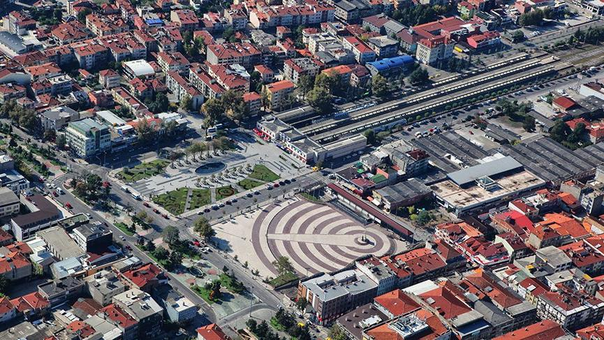
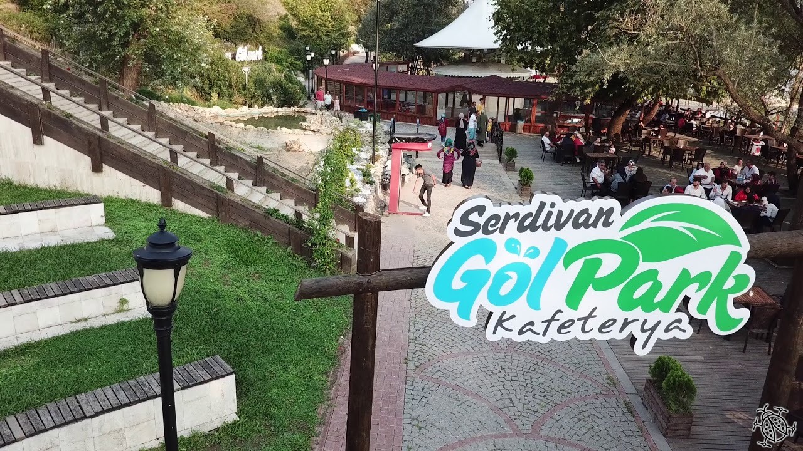
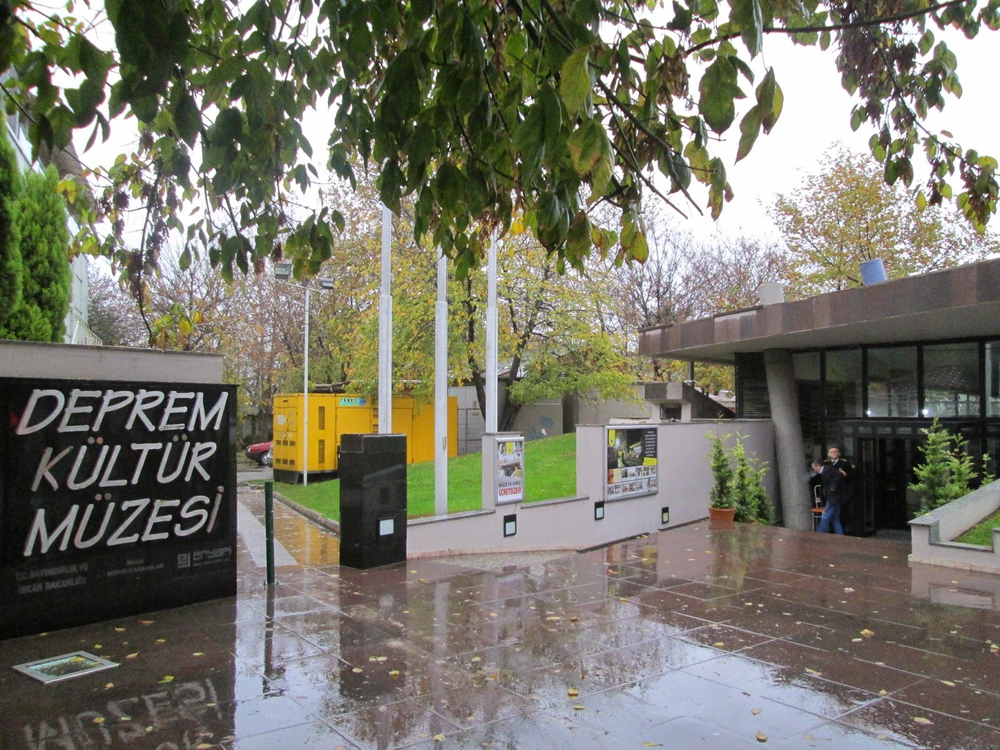
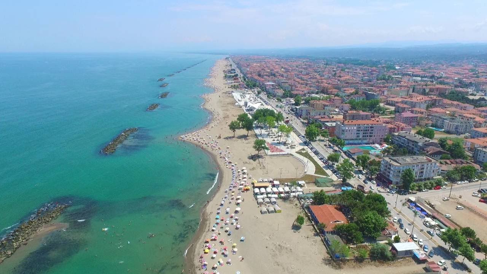
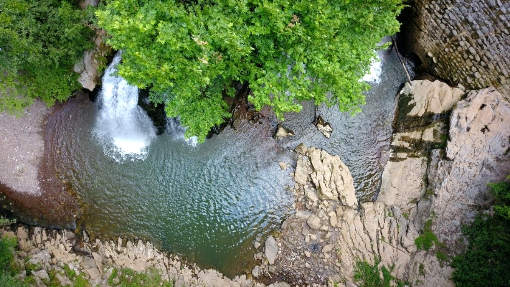

Hakkımda
Özgeçmiş
Sakarya
Sakaryaspor
İletişim
Giriş Yap

Sakarya Türkiye'nin en kalabalık 22.şehridir.
Nüfusu 1.029.600 dür.
16 ilçe ve belediyeye sahiptir.
4.524 km² yüzölçümüne sahiptir.
Sanayi bölgesinde yer aldığıı için sanayi alanında gelişmiştir ve kentin iş gücü fazladır.
İzmit, Bursa, Bolu, Bilecik ve Düzce'ye komşudur.
Birçok tarihi ve kültürel eserin yanında doğal güzellikleriyle Türkiye'nin güzel şehirlerinden biridir.
Aşağıdaki slayttan gezilecek yerleri görebilir, tıklayarak gerekli siteye gidebilirsiniz:
ÇARK CADDESİ

GÖLPARK

DEPREM MÜZESİ

KARASU PLAJI

MADEN DERESİ
Önceki
Sonraki